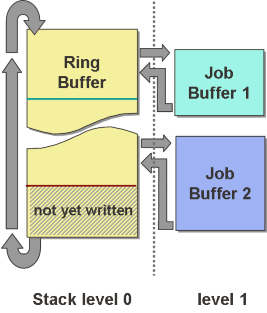

A queue for jobs called the 'ring buffer' is used to pass the jobs from the GPU to the CPU. The ring buffer is a command list of a fixed size which is managed by the kernel driver and which is already allocated by the kernel driver when calling dhd_gpu_init().
When the GPU reads this special commands list, it will automatically return to the start of the ring buffer when its end is reached. The CPU can stop the GPU from processing parts of the ring buffer which are not yet written by means of the GPU 'pause address' control register. The pause address is effectively the 'write pointer' into the ring buffer, while the 'read pointer' is the 'current ring address' status register which the CPU reads back from the GPU. By means of these two registers, the CPU controls writing commands into the ring buffer and monitors the processing of commands from the ring buffer by the GPU.
The job buffers are filled by the user driver and passed to the kernel driver whenever a job is complete. The kernel driver will then only write a call to the job buffer into the ring buffer and advance the pause address accordingly. So jobs are effectively linked into the ring buffer by a command list call command.
The below diagram illustrates this concept:

The turquoise line depicts the 'current stream address'/read pointer of the GPU while the dark red line depicts the 'pause address'/write pointer of the CPU. So job 1 has already been executed and the area between these two lines contains commands which have been written into the ring buffer but which have not yet been executed, like to call to job 2.